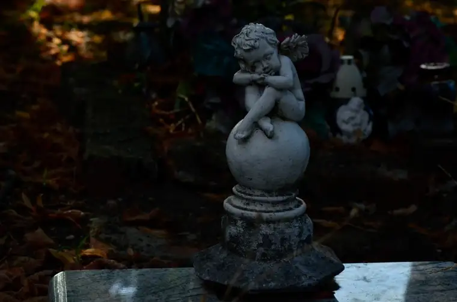

Recently, The Forum newspaper reported on a longtime Devils Lake, North Dakota, resident who relocated to Arizona two years ago and has been charged with the murder of her newborn baby 45 years ago in Valley City.
It’s a haunting scenario, no matter the angle. But it’s important to review the case, because it connects to our local pro-life sidewalk ministry.
To refresh or present the main facts, The Forum newspaper, on April 13, reported that on April 16, 1981, a dead newborn baby girl was found in a wooded area near Valley City State University (VCSU), and an autopsy showed she died of suffocation one to three days before being discovered.
According to the article, “A plastic bag was found over the child’s head, and the infant’s umbilical cord was still attached to the body.” An investigation never identified a suspect or the child’s parents. She was buried with a headstone bearing these words: “Baby Girl Rebecca, Known to God, April 15, 1981.”
For several decades, the case went quiet. But in 2019, as DNA testing became available, authorities exhumed the body hoping to bring closure to the case, reburying the baby in 2020.

A genetic genealogy report from a third party, obtained by investigators, recently linked the baby girl to Nancy Trottier, 65, who was a VCSU student between 1978 and 1982.
According to court documents, the DNA testing shows, “with mathematical certainty,” that both Nancy and her husband, Gary, are the baby’s biological parents. Nancy has since been arrested and extradited to North Dakota, where she is being held at the correctional center in Jamestown. Her next hearing is set for May 21.
A newsletter from the North Dakota School for the Deaf and Resource Center, where Nancy worked for 41 years as a paraprofessional, called her “an incredible asset” to the school, noting that she looked forward to retirement and spending more time with her grandkids, golfing and traveling.
What haunts about this case? Everything. That a child died, and in this way, presumably at the hands of her own mother, for one. But as one reviews the details known at this time, so many questions arise.
On a Facebook post I shared with the article, I commented that while the mother ought to face the crime, many children are killed in our area weekly in a similarly gruesome way through abortion, yet this is sanctioned by civil law.
Because abortion is “shielded from our eyes,” I added, we pretend the child isn’t actually there and can be eliminated, and the death goes quietly ignored. “But that doesn’t change that a human being was killed and disposed of. Just like this precious child.”
We see it clearly in the headlines, but not in the equally real, but silent, murders happening weekly in our cities.
One friend, under my Facebook post, asked why the father wasn’t convicted, too. “You can’t tell me he ‘had no idea,’” she said, adding that society “needs to stop letting (men) off the hook.”
True, but it’s a double-edged sword. On the one hand, we prevent men from having a say in abortion, but in doing so, we allow them to relinquish the responsibility for the children they’ve helped bring into being, creating a dangerous Catch-22.
Another wise friend chimed in by noting, “Location of baby doesn’t matter—inside the mother’s body or outside,” adding, “I’m sure she regrets it. So many women do, decades after…”
A commentor on The Forum website remarked that in North Dakota, “they let obvious murderers go free but put a bail that is ridiculous for an elderly woman,” adding, “She shouldn’t have done it. But I am sure in her mind, she’s been in her own prison.”
It’s likely that the mother has been living in a private hell. But it’s also twisted to me that she is being charged with murder while there’s no penalty for abortion, which has the exact same result: a dead child. I am not arguing here that women who abort their children should be criminalized, but we need to be logical and consistent.
I am left feeling bereft and befuddled at this case. What were the circumstances? Why did this mom feel so desperate to do this to her child? How has she lived all these years with this on her soul?
But also, how can we have such a rightfully strong response to the death of this babe but not feel similarly about the classroom-size equivalent of our smallest citizens who die at our area’s abortion facility each week?
I pray for justice for Baby Rebecca, but also for mercy for her parents if they are remorseful, and that God reaches their souls. With him, there is always hope.
[Note: I write about my experiences praying for the end to abortion at the sidewalk abutting the Red River Valley’s lone abortion facility for New Earth magazine — the official news publication of the Fargo Diocese. I hope you find “Sidewalk Stories” helpful in understanding the truth about abortion and how it plays out tragically in our corner of the world. The preceding ran in New Earth’s June 2026 issue.]